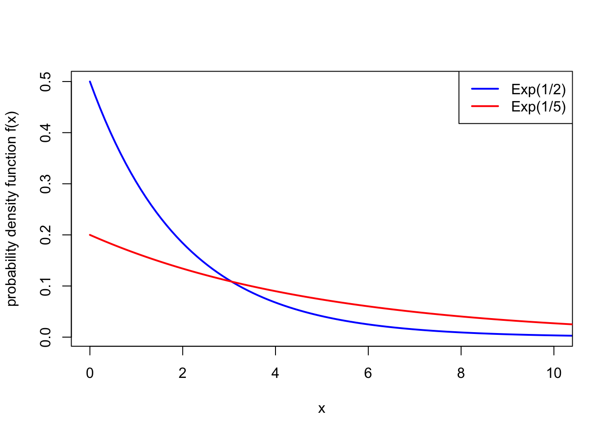

Lecture 17 Exponential distribution and multiple continuous random variables
17.1 Exponential distribution
Definition 17.1 A continuous random variable \(X\) is said to have the exponential distribution with rate \(\lambda > 0\) if it has the PDF \[ f(x) = \lambda \mathrm{e}^{-\lambda x} \qquad \text{for $x \geq 0$}, \] and 0 otherwise. We write \(X \sim \text{Exp}(\lambda)\).

Example 17.1 The length of time in years that a lightbulb works before needing to be replaced is modelled as an exponential distribution with rate \(\lambda = 2\). What is the probability the lightbulb lasts more than a year but less than three years?
If \(X \sim \text{Exp}(2)\) is the lifetime of the lightbulb, we seek \(\mathbb P(1 \leq X \leq 3)\). This is \[ \int_{1}^3 f(x)\, \mathrm{d}x = \int_1^3 2 \mathrm e^{-2x} \, \mathrm dx = \big[ -\mathrm e^{-2x} \big]_1^3 = -\mathrm e^{-6} -(-\mathrm e^{-2}) = 0.132. \]
Theorem 17.1 Suppose \(X \sim \text{Exp}(\lambda)\). Then:
- \(f\) is indeed a PDF, in that \(\displaystyle\int_0^\infty f(x)\,\mathrm{d}x = 1\);
- the CDF of \(X\) is \(F(x) = 1 - \mathrm{e}^{-\lambda x}\);
- the expectation of \(X\) is \(\mathbb EX = \displaystyle\frac{1}{\lambda}\);
- the variance of \(X\) is \(\operatorname{Var}(X) = \displaystyle\frac{1}{\lambda^2}\).
Example 17.2 Returning to the lightbulb example, where \(X \sim \text{Exp}(2)\), we see that the average lifetime of a lightbulb is \(\mathbb EX = \frac12\) a year with variance \(\operatorname{Var}(X) = \frac14\).
We could alternatively calculate \(\mathbb P(1 \leq X \leq 3)\), using the the CDF: \[ \mathbb P(1 \leq X \leq 3) = F(3) - F(1) = (1 - \mathrm{e}^{-2\times 3}) - (1 - \mathrm{e}^{-2\times 1}) = \mathrm{e}^{-2} - \mathrm{e}^{-6} = 0.132 , \] which is the same answer as before.
17.2 Multiple continuous random variables
The theory we set up for two or more discrete random variables also works for two or more continuous random variables.
Now, the intensity of probability for \((X,Y)\) being around \((x,y)\) is given by the joint probability density function \(f_{X,Y}\). In particular for \(a \leq b\) and \(c \leq d\), we have \[ \mathbb P(a \leq X \leq b \text{ and } c \leq Y \leq d ) = \int_{x = a}^b \int_{y = c}^d f_{X,Y}(x,y)\, \mathrm dx \,\mathrm dy .\]
| Discrete random variables | Continuous random variables |
|---|---|
| We can get the marginal PMF \(p_X\) of \(X\) by summing over \(y\), so \[ p_X(x) = \sum_y p_{X,Y}(x,y) . \] | We can get the marginal PDF \(f_X\) of \(X\) by integrating over \(y\), so \[ f_X(x) = \int_{-\infty}^\infty f_{X,Y}(x,y) \, \mathrm dy. \] |
| Two discrete random variables \(X\) and \(Y\) are independent if their PMFs satisfy \[p_{X,Y}(x,y) = p_X(x)\,p_Y(y) \qquad \text{for all $x, y$}.\] | Two continuous random variables \(X\) and \(Y\) are independent if they have PDFs which satisfy \[f_{X,Y}(x,y) = f_X(x)\,f_Y(y) \qquad \text{for all $x, y$}.\] |
| The conditional PMF of \(Y\) given \(X\) is defined by \[ p_{Y \mid X}(y \mid x) = \frac{p_{X,Y}(x,y)}{p_X(x)} . \] | The conditional PDF of \(Y\) given \(X\) is defined by \[ f_{Y \mid X}(y \mid x) = \frac{f_{X,Y}(x,y)}{f_X(x)} . \] |
| Bayes’ theorem states that \[ p_{X \mid Y}(x \mid y) = \frac{p_X(x)\,p_{Y\mid X}(y\mid x)}{p_Y(y)} . \] | Bayes’ theorem states that \[ f_{X \mid Y}(x \mid y) = \frac{f_X(x)\,f_{Y\mid X}(y\mid x)}{f_Y(y)} . \] |
| The expectation of a function of \(X\) and \(Y\) is given by the sum \[ \mathbb Eg(X,Y) = \sum_{x,y} g(x,y)\, p_{X,Y}(x,y) . \] | The expectation of a function of \(X\) and \(Y\) is given by the integral \[ \mathbb Eg(X,Y) = \int_{-\infty}^\infty \int_{-\infty}^\infty g(x,y)\, f_{X,Y}(x,y) \, \mathrm dx \, \mathrm dy . \] |
| The covariance of \(X\) and \(Y\) is given by \[ \operatorname{Cov}(X,Y) = \mathbb E(X - \mu_X)(Y - \mu_Y) , \] and has a computational formula \[ \operatorname{Cov}(X,Y) = \mathbb EXY - \mu_X \mu_Y . \] | The covariance of \(X\) and \(Y\) is given by \[ \operatorname{Cov}(X,Y) = \mathbb E(X - \mu_X)(Y - \mu_Y) , \] and has a computational formula \[ \operatorname{Cov}(X,Y) = \mathbb EXY - \mu_X \mu_Y . \] |
Summary
- The exponential distribution has PDF \(f(x) = \lambda \mathrm e^{-\lambda x}\), expectation \(1/\lambda\), and variance \(1/\lambda^2\).
- Most properties of multiple discrete random variables carry of to multiple continuous random variables. To get a marginal PDF from a joint PDF, we integrate (rather than sum) over the other variable.